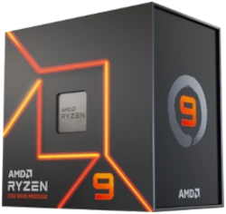
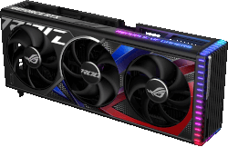
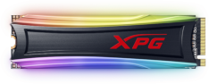
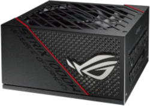
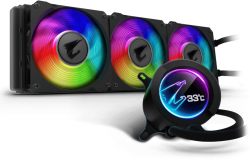
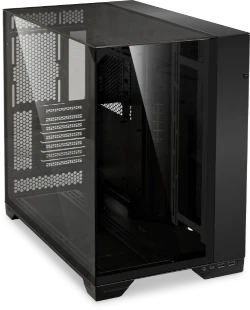
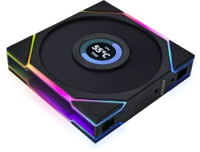

Como montar seu primeiro pc gamer
Autor:Caio Dutra
Contato
Noticias
Informacões
Quais peças utilizar?
Placa mae:
Processador:

Placa de video:

SSD:

Memória ram:
Fonte de alimentação:

Water cooler:

Gabinete:

Fans:

O que faz cada peca do pc gamer?